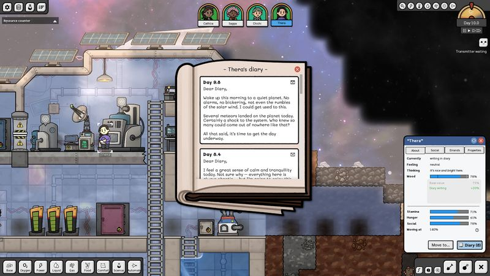
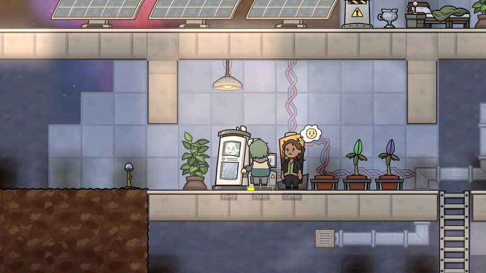

The thirty-second version
A colony sim that makes physics part of the crew.
A colony sim where even the air has a spreadsheet.
Adaptory's fixed four-person crew gives every expansion a cost: the base becomes more complicated while the available hands do not multiply. A simulation of heat, density, viscosity, gravity, and phase changes turns automation from a late-game luxury into the central survival plan.
Okay, what is this thing?
Four procedurally generated explorers crash on a deserted planetoid and have to build a path home. The crew remains fixed while the base grows, so automation becomes the answer to rising complexity.
The simulation models gravity, temperature, density, viscosity, and phase changes. Those systems make pipes, rooms, storage, and environmental control part of a connected physical problem.


Why it escaped the group chat
- Each game begins with four procedurally generated crew members.
- Physics and chemistry model gravity, temperature, density, viscosity, and phase changes.
- A fixed crew size makes automation essential as the base expands.
Three dads enter
01
Dad Who Skipped the Tutorial
The crew stories can humanize the simulation.
Four recognizable explorers give new players something to care about while learning pipes and temperature. Strong alerts and overlays will be necessary when the physics starts cascading.
02
The Descent Guy
The constraint is labor, not only material.
A fixed crew turns every manual task into an opportunity cost. Automation has strategic meaning because it directly returns scarce attention to the colony.
03
Normal-ish Dad
This is a second-screen-not-required commitment.
The simulation invites long sessions and careful planning. Narrative discovery and clear milestones will determine whether the base feels like a journey rather than a perpetual maintenance job.
Who it is for and what to watch
Invite these people
- Colony-sim players who enjoy connected physical systems
- Automation planners who want labor to remain scarce
- Story-minded players who still want systemic consequences
Dad caveats
- Alert clarity during cascading failures
- Early-game teaching for chemistry and phase changes
- Campaign pacing once basic survival is stable
Receipts
Retrospective mini-review based on the game's appearance in official PAX West 2025 event-page materials and official Steam information. It was not separately verified as an Indie MEGABOOTH-branded booth title.